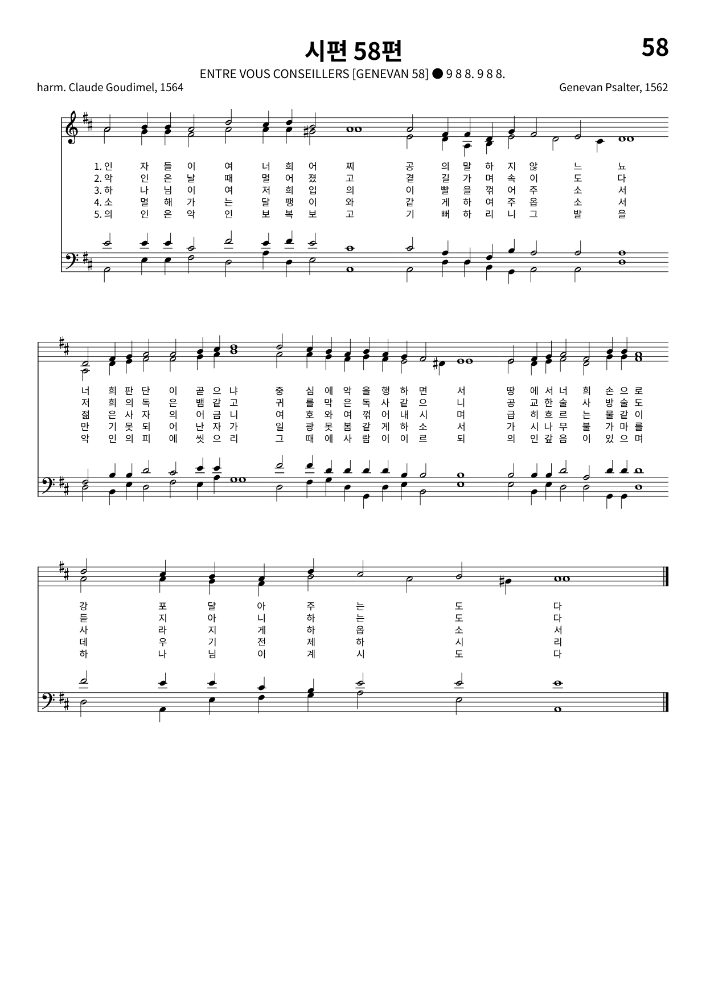

Psalm 58
ENTRE VOUS CONSEILLERS [GENEVAN 58] · 9 8 8. 9 8 8.
English title: Do You Indeed, You Men So Mighty
Tune: Genevan Psalter, 1562 · Harmony: Claude Goudimel, 1564 · Lyrics: Korean adaptation of Psalm 58 from the Korean Revised Version (AI draft adaptation · not yet theologically reviewed) · 5 stanzas
Score PDF MusicXML (for printing) MusicXML (for accompaniment, with prelude and repeats) Read Psalm 58 (Korean Revised Version)
Score
← Psalm 57 ListAccompaniment (in preparation)Psalm 59 →
Lyrics (Korean)
Stanza 1 (Ps. 1~2절)
인자들이여 너희 어찌
공의 말하지 않느뇨
너희 판단이 곧으냐
중심에 악을 행하면서
땅에서 너희 손으로
강포 달아 주는도다
인자들이여 너희 어찌
공의 말하지 않느뇨
너희 판단이 곧으냐
중심에 악을 행하면서
땅에서 너희 손으로
강포 달아 주는도다
Stanza 2 (Ps. 3~5절)
악인은 날 때 멀어졌고
곁길 가며 속이도다
저희의 독은 뱀 같고
귀를 막은 독사 같으니
공교한 술사 방술도
듣지 아니하는도다
악인은 날 때 멀어졌고
곁길 가며 속이도다
저희의 독은 뱀 같고
귀를 막은 독사 같으니
공교한 술사 방술도
듣지 아니하는도다
Stanza 3 (Ps. 6~7절)
하나님이여 저희 입의
이빨을 꺾어 주소서
젊은 사자의 어금니
여호와여 꺾어 내시며
급히 흐르는 물같이
사라지게 하옵소서
하나님이여 저희 입의
이빨을 꺾어 주소서
젊은 사자의 어금니
여호와여 꺾어 내시며
급히 흐르는 물같이
사라지게 하옵소서
Stanza 4 (Ps. 8~9절)
소멸해 가는 달팽이와
같게 하여 주옵소서
만기 못 되어 난 자가
일광 못 봄 같게 하소서
가시나무 불 가마를
데우기 전 제하시리
소멸해 가는 달팽이와
같게 하여 주옵소서
만기 못 되어 난 자가
일광 못 봄 같게 하소서
가시나무 불 가마를
데우기 전 제하시리
Stanza 5 (Ps. 10~11절)
의인은 악인 보복 보고
기뻐하리니 그 발을
악인의 피에 씻으리
그 때에 사람이 이르되
의인 갚음이 있으며
하나님이 계시도다
의인은 악인 보복 보고
기뻐하리니 그 발을
악인의 피에 씻으리
그 때에 사람이 이르되
의인 갚음이 있으며
하나님이 계시도다